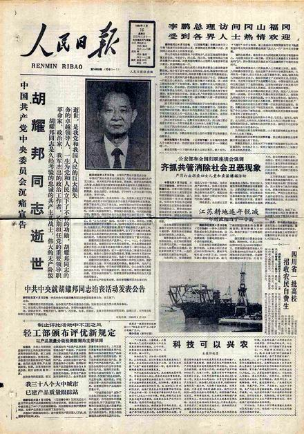

前一个帖子，俺交代了1989年的天朝形势（包括政治形势和经济形势）。套用一句古话，那就是“山雨欲来风满楼”。当时的天朝犹如一个火药桶，一点就炸。而老胡被废一年多来，由于心情极度郁闷，积郁成疾，恰好在这个关键时刻病逝。于是，就像是给天朝这个火药桶添加了引燃的导火索。今天，就给大伙儿聊一聊老胡病逝的经过。
在那年的4月8日，裆中央在中南海怀仁堂开会，讨论《中共中央关于教育发展和改革若干问题的决定》。据老胡的家属说，事前通知他开会的时候，家人觉得他脸色不好，劝他别去。但是老胡觉得教育问题非常重要，坚持去开会。到了会议室之后，某些与会者也感觉老胡的脸色不太好。
那天的会议由赵紫阳主持，主要发言的是国家教委主任李铁映（冒昧跑题一下，他的老娘同时也是邓太上皇的第2个老婆。这事儿俺在“本系列第2篇”有八卦过。大多数网友肯定无法想象党国的高层有多么复杂的裙带关系）。话说台上的李铁映正讲得兴起，台下的老胡脸色却越来越差，终于坚持不住了。只见他站起身来，想跟主持会议的老赵请个假。谁知话音未落，就一屁股跌坐到椅子上。开会的各位朝廷大员见此情景都吃了一惊。当时有人看出老胡是心脏病的症状，老赵赶忙问谁有急救药。接着，某个与会者拿出了随身携带的硝酸甘油（此处有点分歧，有的版本说是江泽民随身携带的，有的说是秦基伟随身携带的）让老胡吞下。与此同时，另有人赶紧去招来御医急救。
朝廷的御医还算神速，10分钟就到了。然后，直接在怀仁堂搞了一个简易急救室，对老胡进行抢救。由于会议室被御医征用，会议转移到中南海的勤政殿接着开。与会人士中，就留下了温家宝在怀仁堂指挥抢救（温影帝当年是中央办公厅主任，相当于大内总管）。其实温宝宝又不懂得医术，所谓的“指挥抢救”，更多的是象征意义。
到了下午，御医觉得老胡的症状稍微稳定了，就赶紧把他转移到北京医院的专门病房。
关于胡耀邦的背景，前面已经写了几个帖子介绍过了。1989年的时候，他已经被废，论官衔仅仅是政治局委员。但他的重要性显然远高于普通的政治局委员。在他住院期间，医院每天都要向中央办公厅通报老胡的病情。从医院的每日通报来看，住院的头6天，老胡在逐渐康复。因此，老胡的家人以及某些党国高层，都松了一口气，以为过了危险期。谁曾想，天有不测风云，人有旦夕祸福。就在第7天上午的7点多，老胡再度突发大范围的心肌梗塞，不治身亡。
俺在写本文的时候，找了一些资料来看。发现老胡死前的细节，有如下几种不同说法。
医护人员觉得像老胡这样的心脏病，起身大便是有危险的，应该躺在床上解手。但是老胡不愿意让医护人员伺候，就自己上卫生间。结果那天就在上厕所的时候，因为用力过猛导致心脏病再次发作。
那天上午，老胡解手比较顺利，解手后还吃了些西瓜。吃完西瓜后，正在跟工作人员谈论最近的新闻，然后就突然发病了。
满妹在2006年出过一本书《思念依然无尽——回忆父亲胡耀邦》。书中针对李昭的版本，补充了吃西瓜之后的若干细节。
胡先帝驾崩之后，朝廷高层第一时间就接到通报。这时候面临的头一个棘手问题，就是如何评价老胡。为啥说这个问题很棘手捏？
一方面，老胡是在总书记的位置上被罢免的。当初赶他下台的时候，那帮保守派把他骂得一文不值（具体过程请看“本系列第7篇”）。而老胡从下台到逝世，才2年3个月。如果这时候官方给的评价太高，岂不是自打耳光？
另一方面，老胡在民众（尤其是知识分子和大学生）心中的威望非常高（俺在“这里”有介绍）。以当时一触即发的国内形势，如果官方对老胡的评价太低，那简直是火上浇油。
上述是俺的分析。另外，当时有传言说：朝廷高层的改革派和保守派，对于老胡的评价，观点也截然不同。显然，改革派想要提高对老胡的评价以及葬礼的规格。而保守派则反之。
除了上述的分析和传言，还有一个事实可以从旁佐证。原中央人民广播电台（注意，是中央电台，不是中央电视台）的台长杨正泉在2008年出版了一本书——《新闻背后的故事》。此书提及了胡耀邦逝世那天的一些反常之处。以下是摘录的部分内容，粗体是俺加的。

那么，这个评价到底算高规格还是低规格捏？为了帮助大伙儿了解朝廷的政治语言，俺另外写了一个帖子《如何解读朝廷大员的盖棺定论》。看完之后，你大概就明白，老胡到底享有啥样的规格了。
关于老胡之死，民间有各种传言。流传比较广的，大概是如下两个：传言之一：老胡是在开会的时候，跟某人争论，结果被气得心脏病发作。传言之二：老胡住院后，病情一开始稳定却又突然死亡，是被朝廷的保守派给害死的。
从俺目前找到的资料来看，尚未发现有可信的证据可以证实上述的传言。尤其是“老胡被害”之说，可能性应该很低。俺觉得：老胡当时虽有民望，但无实权。保守派害他的话，并不能得到明显的政治利益，却可能激起民变。当然啦，也不排除将来共党倒台之后，研究党史的人在裆中央的绝密文件中，发现一些不为人知的秘密。
本系列下一个帖子，介绍一下针对老胡的各种悼念活动。
回到本系列的目录
★开会期间，突然发病
在那年的4月8日，裆中央在中南海怀仁堂开会，讨论《中共中央关于教育发展和改革若干问题的决定》。据老胡的家属说，事前通知他开会的时候，家人觉得他脸色不好，劝他别去。但是老胡觉得教育问题非常重要，坚持去开会。到了会议室之后，某些与会者也感觉老胡的脸色不太好。
那天的会议由赵紫阳主持，主要发言的是国家教委主任李铁映（冒昧跑题一下，他的老娘同时也是邓太上皇的第2个老婆。这事儿俺在“本系列第2篇”有八卦过。大多数网友肯定无法想象党国的高层有多么复杂的裙带关系）。话说台上的李铁映正讲得兴起，台下的老胡脸色却越来越差，终于坚持不住了。只见他站起身来，想跟主持会议的老赵请个假。谁知话音未落，就一屁股跌坐到椅子上。开会的各位朝廷大员见此情景都吃了一惊。当时有人看出老胡是心脏病的症状，老赵赶忙问谁有急救药。接着，某个与会者拿出了随身携带的硝酸甘油（此处有点分歧，有的版本说是江泽民随身携带的，有的说是秦基伟随身携带的）让老胡吞下。与此同时，另有人赶紧去招来御医急救。
朝廷的御医还算神速，10分钟就到了。然后，直接在怀仁堂搞了一个简易急救室，对老胡进行抢救。由于会议室被御医征用，会议转移到中南海的勤政殿接着开。与会人士中，就留下了温家宝在怀仁堂指挥抢救（温影帝当年是中央办公厅主任，相当于大内总管）。其实温宝宝又不懂得医术，所谓的“指挥抢救”，更多的是象征意义。
到了下午，御医觉得老胡的症状稍微稳定了，就赶紧把他转移到北京医院的专门病房。
★住院一周，突然去世
关于胡耀邦的背景，前面已经写了几个帖子介绍过了。1989年的时候，他已经被废，论官衔仅仅是政治局委员。但他的重要性显然远高于普通的政治局委员。在他住院期间，医院每天都要向中央办公厅通报老胡的病情。从医院的每日通报来看，住院的头6天，老胡在逐渐康复。因此，老胡的家人以及某些党国高层，都松了一口气，以为过了危险期。谁曾想，天有不测风云，人有旦夕祸福。就在第7天上午的7点多，老胡再度突发大范围的心肌梗塞，不治身亡。
俺在写本文的时候，找了一些资料来看。发现老胡死前的细节，有如下几种不同说法。
◇李鹏的版本
医护人员觉得像老胡这样的心脏病，起身大便是有危险的，应该躺在床上解手。但是老胡不愿意让医护人员伺候，就自己上卫生间。结果那天就在上厕所的时候，因为用力过猛导致心脏病再次发作。
◇夫人李昭的版本
那天上午，老胡解手比较顺利，解手后还吃了些西瓜。吃完西瓜后，正在跟工作人员谈论最近的新闻，然后就突然发病了。
◇女儿满妹的版本
满妹在2006年出过一本书《思念依然无尽——回忆父亲胡耀邦》。书中针对李昭的版本，补充了吃西瓜之后的若干细节。
几分钟后，守护在父亲身边的三哥德华，发现心电监护仪上绿莹莹的心电图波形突然急促地跳动起来，心率从每分钟60次一直往上升，70、80、90……三哥慌忙叫来值班医生。医生看了看心电监护仪，不经意地说：“没事儿，以前也有过这种现象。”三哥不敢相信，仍然目不转睛地盯着监护仪。果然，当每分钟达到 110次时，心率开始逐渐减慢，一分钟后恢复到60次。可还没等三哥和紧张得也凑过来察看的李秘书松口气，峰谷状的心电波形作了一个短暂的停顿，忽然耀眼地一闪，便冰雪消融般地坍塌下来，化作一条碧绿晶莹的水平线，向无极的空间延伸而去。与此同时，只听见躺在床上的父亲痛苦地大叫一声：“啊！——”他那只被李秘书握着的手突然松脱，头部猝然转向一侧。等医护人员赶来急救时，一切都已经无济于事了，父亲再也没有醒来。
★党国的讣告
胡先帝驾崩之后，朝廷高层第一时间就接到通报。这时候面临的头一个棘手问题，就是如何评价老胡。为啥说这个问题很棘手捏？
一方面，老胡是在总书记的位置上被罢免的。当初赶他下台的时候，那帮保守派把他骂得一文不值（具体过程请看“本系列第7篇”）。而老胡从下台到逝世，才2年3个月。如果这时候官方给的评价太高，岂不是自打耳光？
另一方面，老胡在民众（尤其是知识分子和大学生）心中的威望非常高（俺在“这里”有介绍）。以当时一触即发的国内形势，如果官方对老胡的评价太低，那简直是火上浇油。
上述是俺的分析。另外，当时有传言说：朝廷高层的改革派和保守派，对于老胡的评价，观点也截然不同。显然，改革派想要提高对老胡的评价以及葬礼的规格。而保守派则反之。
除了上述的分析和传言，还有一个事实可以从旁佐证。原中央人民广播电台（注意，是中央电台，不是中央电视台）的台长杨正泉在2008年出版了一本书——《新闻背后的故事》。此书提及了胡耀邦逝世那天的一些反常之处。以下是摘录的部分内容，粗体是俺加的。
12点20分，新华社即向境外发了胡耀邦逝世的简讯，香港传媒于13点20分已刊播。但是，此稿未对内发。因为已经对外发稿，中央电台考虑这样的消息对内不应该晚于对外，想对内赶发。经请示部总编室同意，中央电台于14点零4分对内播出了新华社向境外发的胡耀邦去世的80个字简讯，后面播放了1分17秒的哀乐（在简讯后头播出哀乐，过去没有过）。首播连续播出两遍，15点又播出一遍，无哀乐，后在16点、17点又安排了播出。既然治丧规格如此高，只是播发简讯显然是不恰当的，听众也不会理解。但直到这时，新华社仍未对内发稿，说是等到晚上才发。至于为什么要抢先对外发而对内晚发，时间又相差甚多，不得而知。最终，官方发出如下讣告：
......
奇怪的是，13点47分新华社先发了“胡耀邦同志简历”，直到17点仍未发出讣告稿，可能是审定讣告的环节还未定下来。为此，中央电台为联播节目设计了几种预案：
一、先播简讯、哀乐；
二、讣告稿随来随播，用“刚刚收到的消息”；
三、除安排直播联播节目的两名播音员以外，增加一名播音员（方明）待命，准备随时播出讣告。
......
正是出于这种情况，中央电台《全国联播》节目出现了奇特的安排：18点半先播出了胡耀邦逝世的简讯，哀乐，在播出了其他两条新闻之后，18点38分又以“刚刚收到的消息”播出了胡耀邦逝世的讣告（收到稿子是18点32分，方明直播），但在讣告后也就不好再放哀乐了，也就是说在同一节目中播出了两次内容不同、规格不同的消息和讣告。这种发布的不统一和中央电台播出安排的混乱，使听众感到莫名其妙。
久经考验的忠诚的共产主义战士，伟大的无产阶级革命家、政治家，我军杰出的政治工作者，长期担任党的重要领导职务的卓越领导人胡耀邦同志，1989年4月8日在出席中央政治局会议时，突发大面积急性心肌梗塞，经全力治疗，未能挽救，于1989年4月15日晨7时53分逝世，享年73岁。该讣告也同时发布在次日的《人民日报》头版头条，照片如下：
那么，这个评价到底算高规格还是低规格捏？为了帮助大伙儿了解朝廷的政治语言，俺另外写了一个帖子《如何解读朝廷大员的盖棺定论》。看完之后，你大概就明白，老胡到底享有啥样的规格了。
★民间对老胡之死的传言
关于老胡之死，民间有各种传言。流传比较广的，大概是如下两个：传言之一：老胡是在开会的时候，跟某人争论，结果被气得心脏病发作。传言之二：老胡住院后，病情一开始稳定却又突然死亡，是被朝廷的保守派给害死的。
从俺目前找到的资料来看，尚未发现有可信的证据可以证实上述的传言。尤其是“老胡被害”之说，可能性应该很低。俺觉得：老胡当时虽有民望，但无实权。保守派害他的话，并不能得到明显的政治利益，却可能激起民变。当然啦，也不排除将来共党倒台之后，研究党史的人在裆中央的绝密文件中，发现一些不为人知的秘密。
本系列下一个帖子，介绍一下针对老胡的各种悼念活动。
回到本系列的目录
版权声明
本博客所有的原创文章，作者皆保留版权。转载必须包含本声明，保持本文完整，并以超链接形式注明作者编程随想和本文原始地址：
https://program-think.blogspot.com/2011/12/june-fourth-incident-10.html
本博客所有的原创文章，作者皆保留版权。转载必须包含本声明，保持本文完整，并以超链接形式注明作者编程随想和本文原始地址：
https://program-think.blogspot.com/2011/12/june-fourth-incident-10.html